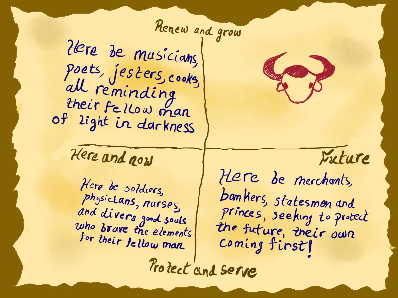
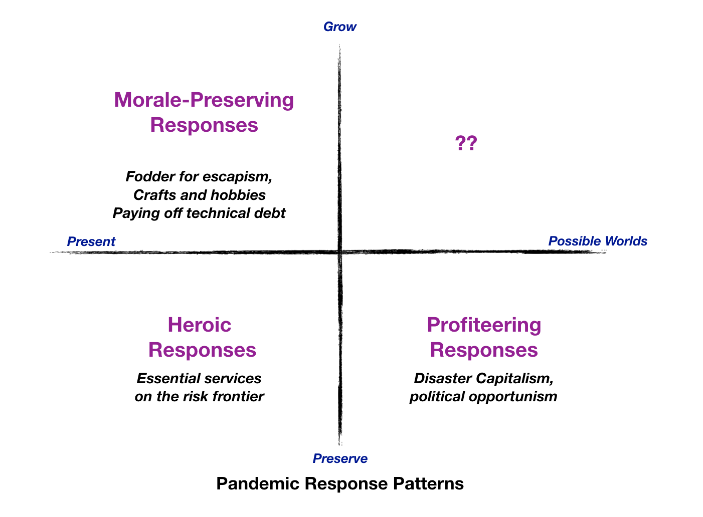

Staying With the Questions
It had been two weeks since that very odd meeting[1] at Khan’s borrowed mansion. Two weeks in which decades had happened. Both Guanxi Gao and Arnie Anscombe looked tired and careworn in their little video windows.
I said, “Well, I guess I’d better kick us off since we’re using my Zoom account. Did everybody get a chance to open those manilla envelopes Khan gave us? I assume we all got the same thing?
“A photograph of an antique 2x2? I assume Khan has the original,” said Gao
“Yeah, a dumb 2x2,” said Anscombe, “I don’t know why we’re even talking about a stupid project to resurrect some sort of medieval Yak-themed consultant guild. In case anyone hasn’t noticed, there’s more important stuff going on in the world.”
I said, “Well, let’s spend a few minutes on it at least. The pandemic isn’t going anywhere soon. Here, let me share my screen, I scanned the photograph.”

“Well, Rao, you’re the 2x2 expert, what’s your take?” asked Anscombe.
“Hmm… interesting that the right side of the x-axis is labeled future, but the left side is is labeled here and now rather than Present. The y-axis makes sense. Clearly some sort of creative-destruction theme there. The bottom half is preservation behaviors, the top half is growth behaviors. I’d guess it dates to the 19th century.”
“How do you get that?” asked Gao.
“Labeling each quadrant became common in the 20th century. Here we have just blocks of text. It’s an early 19th century style. I’d guess late Edwardian or early Victorian England, since it is in English. English ones are rare from that period. It was more of a German thing then.”
Gao said, “Soldiers, physicians, nurses… clearly from some sort of wartime period. Maybe the Napoleonic wars? Crimean war?”
“WHO CARES!” Anscombe said. “Why are we talking about this? Why aren’t we talking about, I don’t know, THE PANDEMIC?”
“Hmm… maybe this IS from a 19th century pandemic period. There were a few cholera outbreaks then, right? Some smallpox? And there was a plague in China too.” said Gao.
I looked at Anscombe, “So what do you want to do? Rush out and investigate the N95 black market? Tweet an offer to donate one hour of pro bono consulting to a nonprofit for every hour a client buys? Our skills are not, you know, particularly useful right now. It’s not like we are holding up anything important by focusing on something else.”
“Speak for yourself. I’ve been scraping data, running my own analyses on flattening the curve, and my own simulations of test-and-trace protocols. I’m also reading virology papers.”
“And you think that is the best use of your time and energy right now?”
Anscombe sighed. “I don’t know. I just feel like, you know, I should be doing something productive to contribute. It’s not like I have anything better to do right now.”
Gao asked, “Didn’t you say you had a bunch of new leads for contingency planning modeling work when we met at Khan’s? You were even offering to hook me up.”
“It’s a total bust. All those leads dried up. I guess the situation evolved and escalated too quickly. Half of them went into radio silence, the other half said they had sudden cost control measures kicking in and had to back out.”
“No business continuity plan survives first contact with the coronovirus, old Chinese saying,” said Gao philosophically.
“I guess we could talk about the 2x2 a bit,” said Anscombe grudgingly. “It’s not like everybody and their uncle isn’t building curve flattening and test-and-trace simulations. The marginal value of anything I could do is probably zero. I guess I was clutching at it because it’s at least something I could do. I’m feeling pretty useless right about now.”
“Never let that bother you. The trick to consulting is to own your default uselessness. You’re always useless until suddenly you aren’t. It is nobody’s Plan A to rely on consultants as an essential resource. Our role begins where Plan A ends.” I said.
“And it’s not like we’re not all in the same boat here. I started some community stuff for the gig newsletter I write, because it was something I could do, not because it’s a huge game-changer that will magically solve coronavirus.”
“I’ve been trying to get better data from my contacts in Wuhan,” said Gao. “It’s not working very well.”
“So to summarize our collective status: when there is a hammer in your hand, everything looks like a nail. Great. Maybe I should just go volunteer at a food bank or something. Or offer statistics tutoring to kids stuck at home,” said Anscombe.
“The second best use of a book is as a doorstop, old Chinese saying,” said Gao.
“Well,” I said, “maybe this 2x2 will spark some better ideas. If we’ve guessed right that it’s from some sort of 19th century wartime or pandemic period, then I guess the top right with the yak is where the old Order of the Yak thought consultants should operate in a crisis?”
“Renew and Grow and Future. A bit banal isn’t it?” said Gao.
“The interesting thing, for me, is that there is no text there. The other three quadrants have text. Future and serve-and-protect is basically opportunistic, cynical politicians. Here-and-now and serve-and-protect is what they’re calling ‘essential services’ just now. And I guess, the top left is the escapist corner of the response. Renew and grow in the here-and-now. Baking sourdough and playing Animal Crossing basically.”
“Gotta protect those precious, fragile middle-class psyches,” said Arnie sourly.
Gao asked, “Was the top right quadrant the best quadrant int he 19th century? Like it is now?”
“I think that default emerged after World War I. The 19th century 2x2s usually positioned the bottom left as the most valued quadrant. They usually had a pretty moralistic tone like this one. The bottom left tended to be the devout, god-fearing, virtuous quadrant. The top right was viewed as the profane quadrant. So makes sense that the old Order of the Yak would cast themselves there. They had a subversive view of their role in the world.”
“Makes sense. The bottom left is doctors, nurses, soldiers. Not very different from today. Anybody you’d label a hero in a crisis.” said Gao.
“That’s a good idea, why don’t we update the 2x2 to a more… modern idiom, and add some quadrant labels. Here… lemme take a stab at it.”
I pulled up my Keynote scratch deck, duplicated my 2x2 template slide, shared my screen, and sketched one out.

“How’s this?”
Gao and Anscombe leaned forward to peer at it, and then leaned back.
“An improvement in clarity I guess. Still doesn’t tell us what should be in the Yak quadrant, and whether we should be operating there,” said Anscombe.
Gao said, “That original is more concrete. So I guess the yak question is: what does future-oriented renewal work look like inside a crisis?”
“There’s a definitional problem there,” I said. “A crisis is pretty much defined as a condition in which all positive futures seems foreclosed. When the only futures you can see clearly are the doomsday ones. When serendipity has shut down.”
“Zemblanity for the win!” said Anscombe, with perhaps a little too much dark glee.
We pondered the new 2x2 silently for a bit.
“It is obscene to work on anything other than immediate, pressing concerns and pain alleviation in a situation like this. You shouldn’t talk of growth and renewal until the crisis has passed. That is all,” Anscombe declared, a touch piously.
“And if growth is the only way out?” Gao asked, in an uncharacteristically quiet voice.
To my surprise, Anscombe seemed to find the thought calming. He said, “That’s a nice paradox. You can’t work on growth until the crisis has passed. The crisis won’t pass until growth returns. You can’t reopen the economy without stopping the virus, you can’t stop the virus without reopening the economy.”
“Out of paradoxes arise the right questions. One must stay with the questions, until they are ready to seek answers.”
“Old Chinese saying?” asked Anscombe sardonically.
“And that,” I said, “is a good paradoxical note on which to adjourn the first meeting of the new Order of the Yak.”
- very odd meeting — and_so_it_begins.html